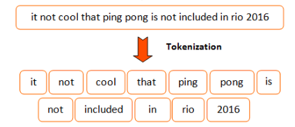
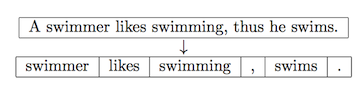
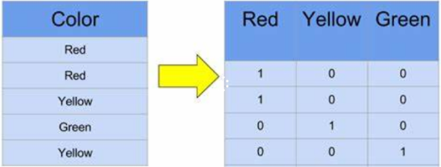

Procesamiento de Lenguaje Natural (NLP)
Contents
Procesamiento de Lenguaje Natural (NLP)¶
NLP es un campo de las ciencias de la computación, inteligencia artificial y lingüística que estudia las interacciones entre las computadoras y el lenguaje humano. Se ocupa de la formulación e investigación de mecanismos eficaces computacionalmente para la comunicación entre personas y máquinas por medio del lenguaje natural. En poca palabras, hacer que la computadora pueden entender y responder en lenguage natural.
Algunas aplicaciones de NLP¶
Extracción de palabras clave (Keyword extraction): identificación automática de términos importantes que mejor describan el tema de un documento.
Extracción de entidades (Named-Entity Recognition): busca localizar en el texto entidades como personas, organizaciones, lugares, expresiones de tiempo y cantidades.
Clasificación de texto: es asignar una categoría a un documento, esto sirve para la detección de spam, análisis de sentimientos, priorización de contenido, etc.
Resumen automático (Text summarization): encontrar las oraciones más informativas en un documento.
Topic modeling: es un tipo de modelo estadístico para descubrir los “topics” abstractos que ocurren en una colección de documentos. Descubre semanticas ocultas en un cuerpo de texto. Encuentra el tema en un conjunto de documentos.
Traducción automática (Machine translation): el uso de software para traducir texto o habla de un lenguaje natural a otro.
Vocabulario del problema¶
En un proyecto de NLP se trabajan con colecciones de “documentos”. Cada documento en un fragmento de texto que se debe procesar de manera individual (clasificar, representar, etc). Algunos ejemplos de documentos son: tweets, revisiones, artículos, libros, etc. El conjunto de todas la palabras que aparecen en todos los documentos constituye el vocabulario del problema. En muchos casos el tamaño del problema puede reducir el desempeño de la solución y es necesario reducirlo.
Los elementos en el vocabulario se conocen como tokens; dependiendo del problema y las decisiones de diseño podrían no ser necesariamente una palabra. Por ejemplo, los emoticones, lemas o palabras compuestas.
En este notebook se muestra como realizar una de las tareas más comunes que ayudan a reducir el tamaño del vocabulario: la eliminación de palabras de parada (stop words).
Tokenización¶
Tokenización es el proceso de separar el texto en piezas llamadas tokens. Es la primera tarea/proceso en cualquier proyecto NLP. Es fundamental realizarla bien para no afectar la calidad de los datos de entrada en las etapas siguientes. Se recomienda usar un tokenizer reconocido y evitar intentar programar uno desde cero.

A continuación, se muestra un ejemplo de tokenización sobre esta noticia. Primero debes cargar la noticia.
texto_noticia = """Los clubes cochabambinos de Olympic, Albert Einstein y el paceño Universidad Católica Boliviana (UCB) avanzan a paso firme y constante rumbo a la corona en la Liga Superior de voleibol, rama femenina, que se desarrolla en el coliseo Julio Borelli Vitterito de La Paz, luego de cosechar sendas victorias la noche de este martes. El ganador será representante de Bolivia en la Liga Sudamericana de Clubes 2020.
El campeón defensor del título, Olympic, superó 3-0 a su verdugo de la final de la edición 2017, el también cochabambino San Simón. La victoria para las olympiquistas fue con sets de 25-14, 25-13 y 25-18."""
texto_noticia
'Los clubes cochabambinos de Olympic, Albert Einstein y el paceño Universidad Católica Boliviana (UCB) avanzan a paso firme y constante rumbo a la corona en la Liga Superior de voleibol, rama femenina, que se desarrolla en el coliseo Julio Borelli Vitterito de La Paz, luego de cosechar sendas victorias la noche de este martes. El ganador será representante de Bolivia en la Liga Sudamericana de Clubes 2020.\n\nEl campeón defensor del título, Olympic, superó 3-0 a su verdugo de la final de la edición 2017, el también cochabambino San Simón. La victoria para las olympiquistas fue con sets de 25-14, 25-13 y 25-18.'
Tokenización a nivel oraciones¶
La función sent_tokenize(…) de nltk.tokenize es el tokenizador a nivel de oraciones. Si tienes problemas importando la librería nltk, ejecuta nltk.download(‘punkt’) desde la consola de Python para descargar la librería.
import nltk
oraciones_noticia = nltk.tokenize.sent_tokenize(text=texto_noticia, language='spanish')
print("Número total de oraciones de la noticia: {}".format(len(oraciones_noticia)))
print("Texto de la oracion 1: {}".format(oraciones_noticia[0]))
---------------------------------------------------------------------------
ModuleNotFoundError Traceback (most recent call last)
Input In [2], in <module>
----> 1 import nltk
3 oraciones_noticia = nltk.tokenize.sent_tokenize(text=texto_noticia, language='spanish')
5 print("Número total de oraciones de la noticia: {}".format(len(oraciones_noticia)))
ModuleNotFoundError: No module named 'nltk'
Tokenización a nivel de palabras.¶
La función nltk.word_tokenize(…) es el tokenizador a nivel de palabras recomendado por NLTK. El resultado de esta función es una lista con todas las palabras de la noticia. Internamente usa una instancia de la clase TreebankWordTokenizer (en la versión más reciente)
palabras_noticia = nltk.word_tokenize(texto_noticia)
palabras_noticia
['Los',
'clubes',
'cochabambinos',
'de',
'Olympic',
',',
'Albert',
'Einstein',
'y',
'el',
'paceño',
'Universidad',
'Católica',
'Boliviana',
'(',
'UCB',
')',
'avanzan',
'a',
'paso',
'firme',
'y',
'constante',
'rumbo',
'a',
'la',
'corona',
'en',
'la',
'Liga',
'Superior',
'de',
'voleibol',
',',
'rama',
'femenina',
',',
'que',
'se',
'desarrolla',
'en',
'el',
'coliseo',
'Julio',
'Borelli',
'Vitterito',
'de',
'La',
'Paz',
',',
'luego',
'de',
'cosechar',
'sendas',
'victorias',
'la',
'noche',
'de',
'este',
'martes',
'.',
'El',
'ganador',
'será',
'representante',
'de',
'Bolivia',
'en',
'la',
'Liga',
'Sudamericana',
'de',
'Clubes',
'2020',
'.',
'El',
'campeón',
'defensor',
'del',
'título',
',',
'Olympic',
',',
'superó',
'3-0',
'a',
'su',
'verdugo',
'de',
'la',
'final',
'de',
'la',
'edición',
'2017',
',',
'el',
'también',
'cochabambino',
'San',
'Simón',
'.',
'La',
'victoria',
'para',
'las',
'olympiquistas',
'fue',
'con',
'sets',
'de',
'25-14',
',',
'25-13',
'y',
'25-18',
'.']
Debes saber que word_tokenize, no es la única función que permite realizar este trabajo. Puedes utilizar también casual_tokenize. Encuentra la diferencia =)
nltk.tokenize.casual.casual_tokenize("Que buena pelicula. Gracias por invitarme :)")
['Que', 'buena', 'pelicula', '.', 'Gracias', 'por', 'invitarme', ':)']
nltk.word_tokenize("Que buena pelicula. Gracias por invitarme :)")
['Que', 'buena', 'pelicula', '.', 'Gracias', 'por', 'invitarme', ':', ')']
Quitar palabras de parada¶
Dependiendo del lenguaje existen palabras que tienden a repetirse mucho más que otras, estas generalmente son los artículos, las preposiciones, y las conjunciones. Estas palabras suelen ser perjudiciales al momento de analizar el texto porque no aportan información relevante, es por eso que se deben quitar las palabras de parada del vocabulario del problema. Tener en cuenta que NO hay una lista universal y exhaustiva de estas palabras. Cada lenguage e incluso tipo de problema puede tener su propia lista de palabras de parada.

Puesto que estas listas pueden variar dependiendo de la librería o incluso entre versiones de la misma librería, incluir este paso puede dificultar la reproducción de los resultados en otros entornos. Veremos más adelante que hay otros mecanismos para lidiar con este tipo de palabras (TF, IDF).
Ten en cuenta tambien que quitar alguna palabra de parada como los artículos podría cambiar completamente el significado de algunas palabras compuestas.
Por ejemplo: “La Paz” nombre de un departamento de Bolivia se convierte en -> “Paz” y pierde el sentido.
Si deseas aprender más, ingresa en los siguientes enlaces:
Si tienes problemas importando la libreria nltk, ejecuta este comando nltk.download(‘stopwords’). En el ejemplo se puede ver la lista de palabras de parada que nos ofrece la libreria nltk.corpus
import nltk
nltk.corpus.stopwords.words('spanish')
['de',
'la',
'que',
'el',
'en',
'y',
'a',
'los',
'del',
'se',
'las',
'por',
'un',
'para',
'con',
'no',
'una',
'su',
'al',
'lo',
'como',
'más',
'pero',
'sus',
'le',
'ya',
'o',
'este',
'sí',
'porque',
'esta',
'entre',
'cuando',
'muy',
'sin',
'sobre',
'también',
'me',
'hasta',
'hay',
'donde',
'quien',
'desde',
'todo',
'nos',
'durante',
'todos',
'uno',
'les',
'ni',
'contra',
'otros',
'ese',
'eso',
'ante',
'ellos',
'e',
'esto',
'mí',
'antes',
'algunos',
'qué',
'unos',
'yo',
'otro',
'otras',
'otra',
'él',
'tanto',
'esa',
'estos',
'mucho',
'quienes',
'nada',
'muchos',
'cual',
'poco',
'ella',
'estar',
'estas',
'algunas',
'algo',
'nosotros',
'mi',
'mis',
'tú',
'te',
'ti',
'tu',
'tus',
'ellas',
'nosotras',
'vosotros',
'vosotras',
'os',
'mío',
'mía',
'míos',
'mías',
'tuyo',
'tuya',
'tuyos',
'tuyas',
'suyo',
'suya',
'suyos',
'suyas',
'nuestro',
'nuestra',
'nuestros',
'nuestras',
'vuestro',
'vuestra',
'vuestros',
'vuestras',
'esos',
'esas',
'estoy',
'estás',
'está',
'estamos',
'estáis',
'están',
'esté',
'estés',
'estemos',
'estéis',
'estén',
'estaré',
'estarás',
'estará',
'estaremos',
'estaréis',
'estarán',
'estaría',
'estarías',
'estaríamos',
'estaríais',
'estarían',
'estaba',
'estabas',
'estábamos',
'estabais',
'estaban',
'estuve',
'estuviste',
'estuvo',
'estuvimos',
'estuvisteis',
'estuvieron',
'estuviera',
'estuvieras',
'estuviéramos',
'estuvierais',
'estuvieran',
'estuviese',
'estuvieses',
'estuviésemos',
'estuvieseis',
'estuviesen',
'estando',
'estado',
'estada',
'estados',
'estadas',
'estad',
'he',
'has',
'ha',
'hemos',
'habéis',
'han',
'haya',
'hayas',
'hayamos',
'hayáis',
'hayan',
'habré',
'habrás',
'habrá',
'habremos',
'habréis',
'habrán',
'habría',
'habrías',
'habríamos',
'habríais',
'habrían',
'había',
'habías',
'habíamos',
'habíais',
'habían',
'hube',
'hubiste',
'hubo',
'hubimos',
'hubisteis',
'hubieron',
'hubiera',
'hubieras',
'hubiéramos',
'hubierais',
'hubieran',
'hubiese',
'hubieses',
'hubiésemos',
'hubieseis',
'hubiesen',
'habiendo',
'habido',
'habida',
'habidos',
'habidas',
'soy',
'eres',
'es',
'somos',
'sois',
'son',
'sea',
'seas',
'seamos',
'seáis',
'sean',
'seré',
'serás',
'será',
'seremos',
'seréis',
'serán',
'sería',
'serías',
'seríamos',
'seríais',
'serían',
'era',
'eras',
'éramos',
'erais',
'eran',
'fui',
'fuiste',
'fue',
'fuimos',
'fuisteis',
'fueron',
'fuera',
'fueras',
'fuéramos',
'fuerais',
'fueran',
'fuese',
'fueses',
'fuésemos',
'fueseis',
'fuesen',
'sintiendo',
'sentido',
'sentida',
'sentidos',
'sentidas',
'siente',
'sentid',
'tengo',
'tienes',
'tiene',
'tenemos',
'tenéis',
'tienen',
'tenga',
'tengas',
'tengamos',
'tengáis',
'tengan',
'tendré',
'tendrás',
'tendrá',
'tendremos',
'tendréis',
'tendrán',
'tendría',
'tendrías',
'tendríamos',
'tendríais',
'tendrían',
'tenía',
'tenías',
'teníamos',
'teníais',
'tenían',
'tuve',
'tuviste',
'tuvo',
'tuvimos',
'tuvisteis',
'tuvieron',
'tuviera',
'tuvieras',
'tuviéramos',
'tuvierais',
'tuvieran',
'tuviese',
'tuvieses',
'tuviésemos',
'tuvieseis',
'tuviesen',
'teniendo',
'tenido',
'tenida',
'tenidos',
'tenidas',
'tened']
Otra lista de palabras de parada que podrías tomar en cuenta son los signos de puntuación.
import string
list(string.punctuation)
['!',
'"',
'#',
'$',
'%',
'&',
"'",
'(',
')',
'*',
'+',
',',
'-',
'.',
'/',
':',
';',
'<',
'=',
'>',
'?',
'@',
'[',
'\\',
']',
'^',
'_',
'`',
'{',
'|',
'}',
'~']
Puedes unir ambas listas para tener todo mejor organizado
palabras_de_parada = set( nltk.corpus.stopwords.words('spanish') + list(string.punctuation))
palabras_de_parada
{'!',
'"',
'#',
'$',
'%',
'&',
"'",
'(',
')',
'*',
'+',
',',
'-',
'.',
'/',
':',
';',
'<',
'=',
'>',
'?',
'@',
'[',
'\\',
']',
'^',
'_',
'`',
'a',
'al',
'algo',
'algunas',
'algunos',
'ante',
'antes',
'como',
'con',
'contra',
'cual',
'cuando',
'de',
'del',
'desde',
'donde',
'durante',
'e',
'el',
'ella',
'ellas',
'ellos',
'en',
'entre',
'era',
'erais',
'eran',
'eras',
'eres',
'es',
'esa',
'esas',
'ese',
'eso',
'esos',
'esta',
'estaba',
'estabais',
'estaban',
'estabas',
'estad',
'estada',
'estadas',
'estado',
'estados',
'estamos',
'estando',
'estar',
'estaremos',
'estará',
'estarán',
'estarás',
'estaré',
'estaréis',
'estaría',
'estaríais',
'estaríamos',
'estarían',
'estarías',
'estas',
'este',
'estemos',
'esto',
'estos',
'estoy',
'estuve',
'estuviera',
'estuvierais',
'estuvieran',
'estuvieras',
'estuvieron',
'estuviese',
'estuvieseis',
'estuviesen',
'estuvieses',
'estuvimos',
'estuviste',
'estuvisteis',
'estuviéramos',
'estuviésemos',
'estuvo',
'está',
'estábamos',
'estáis',
'están',
'estás',
'esté',
'estéis',
'estén',
'estés',
'fue',
'fuera',
'fuerais',
'fueran',
'fueras',
'fueron',
'fuese',
'fueseis',
'fuesen',
'fueses',
'fui',
'fuimos',
'fuiste',
'fuisteis',
'fuéramos',
'fuésemos',
'ha',
'habida',
'habidas',
'habido',
'habidos',
'habiendo',
'habremos',
'habrá',
'habrán',
'habrás',
'habré',
'habréis',
'habría',
'habríais',
'habríamos',
'habrían',
'habrías',
'habéis',
'había',
'habíais',
'habíamos',
'habían',
'habías',
'han',
'has',
'hasta',
'hay',
'haya',
'hayamos',
'hayan',
'hayas',
'hayáis',
'he',
'hemos',
'hube',
'hubiera',
'hubierais',
'hubieran',
'hubieras',
'hubieron',
'hubiese',
'hubieseis',
'hubiesen',
'hubieses',
'hubimos',
'hubiste',
'hubisteis',
'hubiéramos',
'hubiésemos',
'hubo',
'la',
'las',
'le',
'les',
'lo',
'los',
'me',
'mi',
'mis',
'mucho',
'muchos',
'muy',
'más',
'mí',
'mía',
'mías',
'mío',
'míos',
'nada',
'ni',
'no',
'nos',
'nosotras',
'nosotros',
'nuestra',
'nuestras',
'nuestro',
'nuestros',
'o',
'os',
'otra',
'otras',
'otro',
'otros',
'para',
'pero',
'poco',
'por',
'porque',
'que',
'quien',
'quienes',
'qué',
'se',
'sea',
'seamos',
'sean',
'seas',
'sentid',
'sentida',
'sentidas',
'sentido',
'sentidos',
'seremos',
'será',
'serán',
'serás',
'seré',
'seréis',
'sería',
'seríais',
'seríamos',
'serían',
'serías',
'seáis',
'siente',
'sin',
'sintiendo',
'sobre',
'sois',
'somos',
'son',
'soy',
'su',
'sus',
'suya',
'suyas',
'suyo',
'suyos',
'sí',
'también',
'tanto',
'te',
'tendremos',
'tendrá',
'tendrán',
'tendrás',
'tendré',
'tendréis',
'tendría',
'tendríais',
'tendríamos',
'tendrían',
'tendrías',
'tened',
'tenemos',
'tenga',
'tengamos',
'tengan',
'tengas',
'tengo',
'tengáis',
'tenida',
'tenidas',
'tenido',
'tenidos',
'teniendo',
'tenéis',
'tenía',
'teníais',
'teníamos',
'tenían',
'tenías',
'ti',
'tiene',
'tienen',
'tienes',
'todo',
'todos',
'tu',
'tus',
'tuve',
'tuviera',
'tuvierais',
'tuvieran',
'tuvieras',
'tuvieron',
'tuviese',
'tuvieseis',
'tuviesen',
'tuvieses',
'tuvimos',
'tuviste',
'tuvisteis',
'tuviéramos',
'tuviésemos',
'tuvo',
'tuya',
'tuyas',
'tuyo',
'tuyos',
'tú',
'un',
'una',
'uno',
'unos',
'vosotras',
'vosotros',
'vuestra',
'vuestras',
'vuestro',
'vuestros',
'y',
'ya',
'yo',
'{',
'|',
'}',
'~',
'él',
'éramos'}
Finalmente solo queda eliminar las palabras de parada del texto de la noticia.
palabras_noticia_sin_palabras_de_parada = [palabra for palabra in palabras_noticia if palabra not in palabras_de_parada]
palabras_noticia_sin_palabras_de_parada
['Los',
'clubes',
'cochabambinos',
'Olympic',
'Albert',
'Einstein',
'paceño',
'Universidad',
'Católica',
'Boliviana',
'UCB',
'avanzan',
'paso',
'firme',
'constante',
'rumbo',
'corona',
'Liga',
'Superior',
'voleibol',
'rama',
'femenina',
'desarrolla',
'coliseo',
'Julio',
'Borelli',
'Vitterito',
'La',
'Paz',
'luego',
'cosechar',
'sendas',
'victorias',
'noche',
'martes',
'El',
'ganador',
'representante',
'Bolivia',
'Liga',
'Sudamericana',
'Clubes',
'2020',
'El',
'campeón',
'defensor',
'título',
'Olympic',
'superó',
'3-0',
'verdugo',
'final',
'edición',
'2017',
'cochabambino',
'San',
'Simón',
'La',
'victoria',
'olympiquistas',
'sets',
'25-14',
'25-13',
'25-18']
Otras tareas de limpieza que se pueden considerar¶
Unificar el case - string.lower()>.
Quitar acentos (probablemente no es buena idea si el contenido está en español)
Procesar contracciones. I’m -> I am
Quitar caracteres expeciales. Como los siguientes: #@!
Quitar markup. Ejemplo en contenido HTML
Corregir texto. Ejemplo, noooo por favoooorrr -> no por favor
Algunos enlaces de utilidad:
http://norvig.com/spell-correct.html
https://github.com/fsondej/autocorrect
https://github.com/MajorTal/DeepSpell
Lematización¶
Eliminar las variaciones de la misma palabra para tratar las variaciones como una sola entidad. (close, closed, closing; caminaba, caminando, caminar). Al igual que la eliminación de palabras de parada, se emplea para reducir la cantidad de elementos en el vocabulario de un problema.
Algunos enlaces que podrían servirte de ayuda:
Identificar n-gramas¶
Grupos de N palabras que están siempre juntas (Nueva York, Santa Cruz) y que deben tratarse como una sola entidad/palabra.
Algunos enlaces que podrían servirte de ayuda:
Desambiguación lingüística (Word Sense Disambiguation)¶
Asignar significado en base al contexto. ¿Con qué sentido se usa una palabra? En el caso de la polisemia, ¿cuál de los significados es el más apropiado dado el contexto?
Ejemplos:
Placeres de la carne.
La carne está sabrosa.
Puso dos velas a San Pedro.
Los egipcios fueron los primeros constructores de barcos de vela de los que se tiene noticia.
El desarrollo de algoritmos para reproducir esta capacidad humana (desambiguar el significado) a menudo puede ser una tarea muy difícil. En la frase “La carne está sabrosa” hay también cierto contenido implícito: se asume que estamos hablando de carne cocida.
Algunos enlaces que podrían servirte de ayuda:
Recursos lingüísticos
Estrategias
Etiquetado gramatical (Part of Speech Tagging)¶
Como parte de la desambiguación, se suele realizar la tarea de asignar una categoría a cada palabra: sujeto, nombre, verbo, adjetivo.
Algunos enlaces de ayuda:
Representación del texto¶
Dependiendo del tipo de problema NLP, el texto deberá transformarse en una representación adecuada para las herramientas y algoritmos empleandos para abordar el problema. Una de las más usadas es crear representaciones numéricas. Esencialmente, se trata de convertir texto en un vector/arreglo de números.
Los valores en el arreglo pueden ser por ejemplo: la frequencia del tóken en el documento, el código en un word embedding, o la métrica TF-IDF.
Hay escenarios en los cuales estos vectores pueden tener un gran tamaño, en estos casos se recomienda emplear alguna estrategia para reducir la dimensionalidad de los vectores (Ej. feature hashing, locality sensitive hashing).
Para su mejor comprensión, realizaremos la representación sobre la base de esta noticia
Primero debemos obtener el texto de la noticia.
texto_noticia = """Los clubes cochabambinos de Olympic, Albert Einstein y el paceño Universidad Católica Boliviana (UCB) avanzan a paso firme y constante rumbo a la corona en la Liga Superior de voleibol, rama femenina, que se desarrolla en el coliseo Julio Borelli Vitterito de La Paz, luego de cosechar sendas victorias la noche de este martes. El ganador será representante de Bolivia en la Liga Sudamericana de Clubes 2020.
El campeón defensor del título, Olympic, superó 3-0 a su verdugo de la final de la edición 2017, el también cochabambino San Simón. La victoria para las olympiquistas fue con sets de 25-14, 25-13 y 25-14."""
texto_noticia
'Los clubes cochabambinos de Olympic, Albert Einstein y el paceño Universidad Católica Boliviana (UCB) avanzan a paso firme y constante rumbo a la corona en la Liga Superior de voleibol, rama femenina, que se desarrolla en el coliseo Julio Borelli Vitterito de La Paz, luego de cosechar sendas victorias la noche de este martes. El ganador será representante de Bolivia en la Liga Sudamericana de Clubes 2020.\n\nEl campeón defensor del título, Olympic, superó 3-0 a su verdugo de la final de la edición 2017, el también cochabambino San Simón. La victoria para las olympiquistas fue con sets de 25-14, 25-13 y 25-14.'
Ahora debemos importar las librerias correspondientes y generar la lista de stop words en español.
import nltk
import string
import numpy as np
import pandas as pd
import collections
import math
# nltk.download('stopwords') # Si no está ya descargado
palabras_de_parada_espanol = set( nltk.corpus.stopwords.words('spanish') + list(string.punctuation))
Luego proceguimos a tokenizar el texto a nivel oración.
# nltk.download('punkt') # Si no está ya presente
oraciones_noticia = nltk.tokenize.sent_tokenize(text=texto_noticia, language='spanish')
oraciones_noticia[0]
'Los clubes cochabambinos de Olympic, Albert Einstein y el paceño Universidad Católica Boliviana (UCB) avanzan a paso firme y constante rumbo a la corona en la Liga Superior de voleibol, rama femenina, que se desarrolla en el coliseo Julio Borelli Vitterito de La Paz, luego de cosechar sendas victorias la noche de este martes.'
Creamos una funcion para eliminar las palabras de parada de una oración.
def normalizar_oraciones(oraciones, language='spanish'):
tokens = nltk.word_tokenize(oraciones,language)
tokens_filtrados = [token.lower() for token in tokens if token not in palabras_de_parada_espanol]
return " ".join(tokens_filtrados)
Aplicamos la función a todo el cuerpo del texto.
def normalizar_cuerpo_texto(oraciones, language='spanish'):
return np.array([normalizar_oraciones(oracion, language) for oracion in oraciones])
cuerpo_texto_normalizado = normalizar_cuerpo_texto(oraciones_noticia)
cuerpo_texto_normalizado
array(['los clubes cochabambinos olympic albert einstein paceño universidad católica boliviana ucb avanzan paso firme constante rumbo corona liga superior voleibol rama femenina desarrolla coliseo julio borelli vitterito la paz luego cosechar sendas victorias noche martes',
'el ganador representante bolivia liga sudamericana clubes 2020',
'el campeón defensor título olympic superó 3-0 verdugo final edición 2017 cochabambino san simón',
'la victoria olympiquistas sets 25-14 25-13 25-14'], dtype='<U264')
Muy bien, ahora obtendremos el vocabulario del problema con el siguiente código.
def obtener_vocabulario_problema(cuerpo_texto_normalizado):
vocabulario_problema = []
for oracion in cuerpo_texto_normalizado:
vocabulario_problema.extend(oracion.split())
return vocabulario_problema
Con la siguiente función, tendremos cada palabra del vocabulario con su posición.
def obtener_vocabulario_problema_y_posicion(vocabulario_del_problema_ordenado):
token_y_su_posicion = {}
for i, token in enumerate(vocabulario_del_problema_ordenado):
token_y_su_posicion[token] = i
return token_y_su_posicion
vocabulario_problema = obtener_vocabulario_problema(cuerpo_texto_normalizado)
vocabulario_problema_ordenado = sorted(set(vocabulario_problema))
vocabulario_problema_y_su_posicion = obtener_vocabulario_problema_y_posicion(vocabulario_problema_ordenado)
print("Cantidad de palabras:", len(vocabulario_problema_y_su_posicion))
vocabulario_problema_y_su_posicion
Cantidad de palabras: 58
{'2017': 0,
'2020': 1,
'25-13': 2,
'25-14': 3,
'3-0': 4,
'albert': 5,
'avanzan': 6,
'bolivia': 7,
'boliviana': 8,
'borelli': 9,
'campeón': 10,
'católica': 11,
'clubes': 12,
'cochabambino': 13,
'cochabambinos': 14,
'coliseo': 15,
'constante': 16,
'corona': 17,
'cosechar': 18,
'defensor': 19,
'desarrolla': 20,
'edición': 21,
'einstein': 22,
'el': 23,
'femenina': 24,
'final': 25,
'firme': 26,
'ganador': 27,
'julio': 28,
'la': 29,
'liga': 30,
'los': 31,
'luego': 32,
'martes': 33,
'noche': 34,
'olympic': 35,
'olympiquistas': 36,
'paceño': 37,
'paso': 38,
'paz': 39,
'rama': 40,
'representante': 41,
'rumbo': 42,
'san': 43,
'sendas': 44,
'sets': 45,
'simón': 46,
'sudamericana': 47,
'superior': 48,
'superó': 49,
'título': 50,
'ucb': 51,
'universidad': 52,
'verdugo': 53,
'victoria': 54,
'victorias': 55,
'vitterito': 56,
'voleibol': 57}
One-hot encoding (tuplas de palabras)¶
Los feature vectors se utilizan para representar características simbólicas o númericas; llamados features, de un objeto de una manera matemática y fácilmente analizable.
Se crea un vocabulario con todas la palabras de todos los documentos. Y cada documento se representa como una arreglo donde se indica la presencia o ausencia de una palabra en el documento.

Cada documento se representa con uno arreglo tan grande como todo el vocabulario! :(
Se pierde el órden y la frequencia de las palabras.
No captura relaciones entre palabras.
Su mayor ventaja es la simplicidad.
cuerpo_texto_normalizado[2]
'el campeón defensor título olympic superó 3-0 verdugo final edición 2017 cochabambino san simón'
def vector_one_hot(oracion, vocabulario_problema_y_su_posicion):
vector = np.zeros(len(vocabulario_problema_y_su_posicion),dtype=int)
for token in oracion.split():
vector[vocabulario_problema_y_su_posicion[token]] = 1
return vector
vector_one_hot(cuerpo_texto_normalizado[2], vocabulario_problema_y_su_posicion)
array([1, 0, 0, 0, 1, 0, 0, 0, 0, 0, 1, 0, 0, 1, 0, 0, 0, 0, 0, 1, 0, 1,
0, 1, 0, 1, 0, 0, 0, 0, 0, 0, 0, 0, 0, 1, 0, 0, 0, 0, 0, 0, 0, 1,
0, 0, 1, 0, 0, 1, 1, 0, 0, 1, 0, 0, 0, 0])
TF-IDF (Term frequency, inverse document frequency)¶
Conteos
El vector de cada documento contiene la cantidad de veces que aparece una palabra (no solo se marca su presencia/ausencia)
TF-IDF (Term frequency, inverse document frequency)
TF: La frecuencia de una palabra en un documento.
IDF: Mientras en más documentos aparece menos significativa es la palabra en los documentos en las aparece.
Captura la frequencia de las palabras en cada documento y en el contenido formado por el conjunto de los documentos.
El valor de TF-IDF para cada palabra aumenta por su frecuencia en un documento pero disminuye si al mismo tiempo aparece todo el conjunto de documentos (es un término común).
La idea es capturar la importancia de las palabras en los documentos. No captura las relaciones entre las palabras.
TF (Term Frequency)¶
cuerpo_texto_normalizado
array(['los clubes cochabambinos olympic albert einstein paceño universidad católica boliviana ucb avanzan paso firme constante rumbo corona liga superior voleibol rama femenina desarrolla coliseo julio borelli vitterito la paz luego cosechar sendas victorias noche martes',
'el ganador representante bolivia liga sudamericana clubes 2020',
'el campeón defensor título olympic superó 3-0 verdugo final edición 2017 cochabambino san simón',
'la victoria olympiquistas sets 25-14 25-13 25-14'], dtype='<U264')
vocabulario_problema_y_su_posicion
{'2017': 0,
'2020': 1,
'25-13': 2,
'25-14': 3,
'3-0': 4,
'albert': 5,
'avanzan': 6,
'bolivia': 7,
'boliviana': 8,
'borelli': 9,
'campeón': 10,
'católica': 11,
'clubes': 12,
'cochabambino': 13,
'cochabambinos': 14,
'coliseo': 15,
'constante': 16,
'corona': 17,
'cosechar': 18,
'defensor': 19,
'desarrolla': 20,
'edición': 21,
'einstein': 22,
'el': 23,
'femenina': 24,
'final': 25,
'firme': 26,
'ganador': 27,
'julio': 28,
'la': 29,
'liga': 30,
'los': 31,
'luego': 32,
'martes': 33,
'noche': 34,
'olympic': 35,
'olympiquistas': 36,
'paceño': 37,
'paso': 38,
'paz': 39,
'rama': 40,
'representante': 41,
'rumbo': 42,
'san': 43,
'sendas': 44,
'sets': 45,
'simón': 46,
'sudamericana': 47,
'superior': 48,
'superó': 49,
'título': 50,
'ucb': 51,
'universidad': 52,
'verdugo': 53,
'victoria': 54,
'victorias': 55,
'vitterito': 56,
'voleibol': 57}
Contamos la frecuencia de cada token.
tokens_y_su_frecuencia = collections.Counter(cuerpo_texto_normalizado[3].split())
tokens_y_su_frecuencia
Counter({'la': 1,
'victoria': 1,
'olympiquistas': 1,
'sets': 1,
'25-14': 2,
'25-13': 1})
Puedes contar también de esta forma:
frecuencia = collections.Counter(['a','b','c','a'])
frecuencia
Counter({'a': 2, 'b': 1, 'c': 1})
Con el siguiente código puedes obtener todos los tokens
from heapq import nlargest
nlargest(10, frecuencia, key=frecuencia.get)
['a', 'b', 'c']
La siguiente función anota la frecuencia de cada palabra en el vector one hot
def obtener_vector_frecuencia_termino(oracion, vocabulario_problema_y_su_posicion):
vector = np.zeros(len(vocabulario_problema_y_su_posicion),dtype=int)
tokens_y_su_frecuencia = collections.Counter(oracion.split());
for token, frecuencia in tokens_y_su_frecuencia.items():
vector[vocabulario_problema_y_su_posicion[token]] = frecuencia
return vector
obtener_vector_frecuencia_termino(cuerpo_texto_normalizado[3], vocabulario_problema_y_su_posicion)
array([0, 0, 1, 2, 0, 0, 0, 0, 0, 0, 0, 0, 0, 0, 0, 0, 0, 0, 0, 0, 0, 0,
0, 0, 0, 0, 0, 0, 0, 1, 0, 0, 0, 0, 0, 0, 1, 0, 0, 0, 0, 0, 0, 0,
0, 1, 0, 0, 0, 0, 0, 0, 0, 0, 1, 0, 0, 0])
Evite escribir código, cuando se puede hacer con librerias
Un enlace de ayuda: Scikit-Learn Design Principles
simple_cuerpo_texto_normalizado = np.array(['p1 co','p2 co co'])
simple_cuerpo_texto_normalizado
array(['p1 co', 'p2 co co'], dtype='<U8')
La funcion CountVectorizer() implementa transform
from sklearn.feature_extraction.text import CountVectorizer
cv = CountVectorizer()
cv_matris = cv.fit_transform(simple_cuerpo_texto_normalizado)
cv_matris
<2x3 sparse matrix of type '<class 'numpy.int64'>'
with 4 stored elements in Compressed Sparse Row format>
Algunos ejemplos más:
print("Matriz disperza:")
print(cv_matris)
print("Vecto np regular:")
print(cv_matris.toarray())
print("Vocabulario:")
print(cv.vocabulary_)
print("Variables:")
print(cv.get_feature_names())
print("one-hot encoding:")
print(np.sign(cv_matris.toarray()))
Matriz disperza:
(0, 1) 1
(0, 0) 1
(1, 0) 2
(1, 2) 1
Vecto np regular:
[[1 1 0]
[2 0 1]]
Vocabulario:
{'p1': 1, 'co': 0, 'p2': 2}
Variables:
['co', 'p1', 'p2']
one-hot encoding:
[[1 1 0]
[1 0 1]]
Puedes también utilizar los dataframes
pd.DataFrame(cv_matris.toarray(), columns=cv.get_feature_names())
| co | p1 | p2 | |
|---|---|---|---|
| 0 | 1 | 1 | 0 |
| 1 | 2 | 0 | 1 |
Ahora unos ejemplos para bi-gramas.
simple_cuerpo_texto_normalizado
array(['p1 co', 'p2 co co'], dtype='<U8')
bv = CountVectorizer(ngram_range=(1,2))
cv_matris_con_bigramas = bv.fit_transform(simple_cuerpo_texto_normalizado)
print("Matris dispersa:")
print(cv_matris_con_bigramas)
print("Vector np regular:")
print(cv_matris_con_bigramas.toarray())
print("Variables:")
print(bv.get_feature_names())
Matris dispersa:
(0, 2) 1
(0, 0) 1
(0, 3) 1
(1, 0) 2
(1, 4) 1
(1, 5) 1
(1, 1) 1
Vector np regular:
[[1 0 1 1 0 0]
[2 1 0 0 1 1]]
Variables:
['co', 'co co', 'p1', 'p1 co', 'p2', 'p2 co']
Puedes también utilizar dataframes
pd.DataFrame(cv_matris_con_bigramas.toarray(), columns=bv.get_feature_names())
| co | co co | p1 | p1 co | p2 | p2 co | |
|---|---|---|---|---|---|---|
| 0 | 1 | 0 | 1 | 1 | 0 | 0 |
| 1 | 2 | 1 | 0 | 0 | 1 | 1 |
IDF (Inverse Document Frequency)¶
idf(t) = log(cantidad-documentos/cantidad-documentos-con-el-termino)
Min = 1; A valores más alejados de 1, mayor IDF
Interpretación de resultados
simple_cuerpo_texto_normalizado = np.array(['p1 co','p2 co co'])
simple_cuerpo_texto_normalizado
array(['p1 co', 'p2 co co'], dtype='<U8')
from sklearn.feature_extraction.text import TfidfVectorizer
tfIdfv = TfidfVectorizer(norm='l2')
tfIdfv.fit(simple_cuerpo_texto_normalizado)
TfidfVectorizer()
Fijate lo que pasa con el valor idf para las palabras que aparecen en muchos documentos. Debido a cómo sckit-learn hace los cálculos, no hay IDF = 0, el valor mínimo es 1
dict(zip(tfIdfv.get_feature_names(),tfIdfv.idf_ ))
{'co': 1.0, 'p1': 1.4054651081081644, 'p2': 1.4054651081081644}
simple_cuerpo_texto_normalizado = np.array(['p1 co co','p2 co'])
tfIdfv.fit(simple_cuerpo_texto_normalizado)
TfidfVectorizer()
Este score/indicador aumenta con la frequencia de la palabra en el documento, pero disminuye cuando la palabra se hace muy común (baja su relevancia)
tt_matris = tfIdfv.transform(simple_cuerpo_texto_normalizado)
print("Vector np regular:")
print(tt_matris.toarray())
print("Variables:")
print(tfIdfv.get_feature_names())
Vector np regular:
[[0.81818021 0.57496187 0. ]
[0.57973867 0. 0.81480247]]
Variables:
['co', 'p1', 'p2']
Word embeddings¶
Asociación de palabras con códigos numéricos que capturan su similitud semánticas. Por ejemplo, Londres tendrá un valor numérico cercano a París porque ambas palabras tiene significado parecido (ambas son ciudades importantes de europa); de la misma manera, la distancia entre las palabras “varón” y “mujer” sería similar a la distancia que existe entre “rey” y “reina”.
Son generadas a partir de grandes cuerpos de texto por algoritmos basados en redes neuronales, reducción de la dimensionalidad de matrices de co-ocurrencia y modelos probabilísticos.
Algunos enlaces de ayuda:
https://en.wikipedia.org/wiki/Word2vec
https://github.com/aitoralmeida/spanish_word2vec